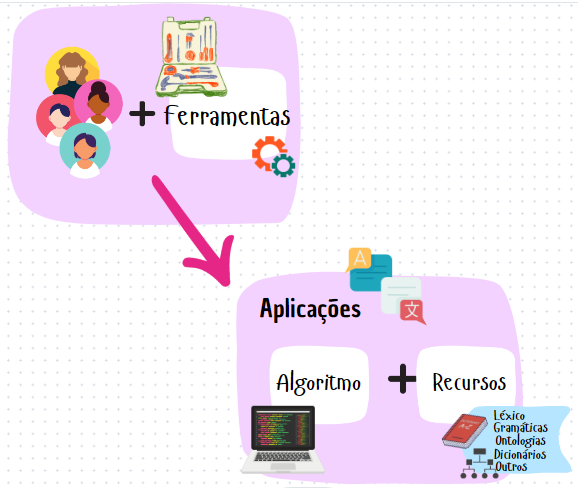
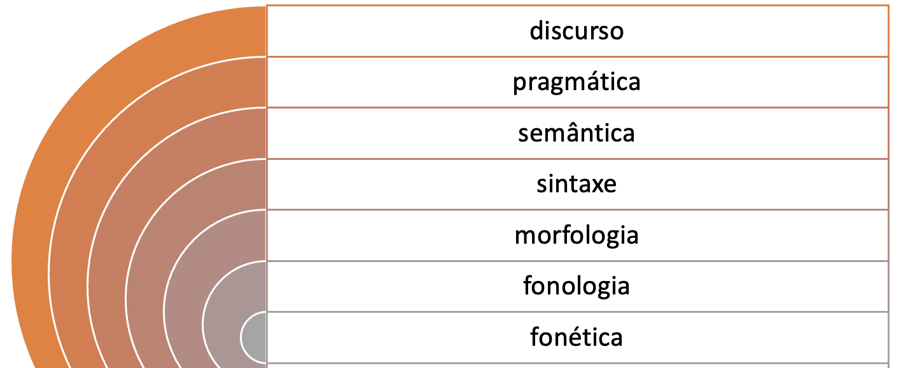
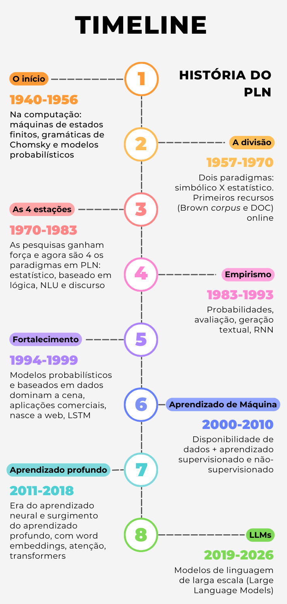

1 O que é PLN?
1.1 Introdução
O Processamento de Linguagem Natural (PLN) é um campo de pesquisa que tem como objetivo investigar e propor métodos e sistemas de processamento computacional da linguagem humana. O adjetivo “Natural”, na sigla, se refere às línguas faladas pelos humanos, distinguindo-as das demais linguagens (matemáticas, visuais, gestuais, de programação etc.). No decorrer deste livro, os termos “língua”, “linguagem humana” e “linguagem natural” serão usados indistintamente; já “linguagem” pode eventualmente se referir a qualquer tipo de linguagem. Na área da Ciência da Computação, PLN está ligado à área de Inteligência Artificial (IA) e também está intrinsecamente relacionada à Linguística Computacional.
Para deixar mais claro o que entendemos por PLN, vamos esclarecer o que se faz nessa área. De modo geral, em PLN buscam-se soluções para problemas computacionais, ou seja, tarefas, sistemas, aplicações ou programas, que requerem o tratamento computacional de uma língua (português, inglês etc.), seja escrita (texto) ou falada (fala). Línguas como as de sinais também têm sido alvo de estudos da área. Cada modo tem suas especificidades. No caso da fala, as características que a distinguem da língua escrita são relacionadas a questões da produção (síntese) e recepção (reconhecimento) do som. Recursos da fala, como a entonação, o volume, o sotaque, podem tanto dificultar o reconhecimento ou a síntese, como também facilitar o reconhecimento de sentimentos ou intenções do falante. Qualquer que seja o modo, fala, escrita, línguas orais e línguas de sinais compartilham a dificuldade maior em PLN: a apreensão do significado de uma expressão linguística. Isso vai ficar claro no decorrer deste livro.
O PLN se divide em duas grandes subáreas: Interpretação (ou Compreensão) de Linguagem Natural – NLU (do inglês, Natural Language Understanding), e Geração de Linguagem Natural – NLG (do inglês, Natural Language Generation)1.
Situa-se em NLU tudo o que diz respeito ao processamento que visa à análise e à interpretação da língua. Por análise, entende-se a segmentação e classificação dos componentes linguísticos (p. ex. palavras e suas classes morfológicas e gramaticais, seus traços semânticos ou ontológicos etc.). Já interpretação se refere à tentativa de apreender significados construídos pelo ser humano. Numa interação com um chatbot, por exemplo, a interpretação ocorre quando o sistema processa um texto do usuário para descobrir o que ele – o sistema – deve fazer a seguir: se fornecer uma resposta ou executar uma ação. Logo ficará claro que respostas mais ou menos bem-sucedidas do sistema para o significado tencionado pelo humano podem ser suficientes para muitas aplicações, e que o completo alinhamento entre o significado tencionado pelo humano e aquele interpretado pela máquina não deve ser parte das nossas expectativas.
Em NLG, por outro lado, o objetivo é a geração de linguagem natural. Um exemplo de NLG é a geração de respostas ao usuário dos chatbots. Para o sistema, isso significa decidir o que responder e como apresentar essa resposta ao usuário. Atualmente, o ChatGPT2 é o exemplo de maior sucesso: é capaz de gerar língua de forma tão ou mais fluente quanto muitos humanos.
É importante esclarecer, desde já, alguns conceitos amplamente usados no decorrer deste livro. Eles dizem respeito à classificação de alguns sistemas de PLN quanto ao seu uso.
Esses conceitos são: aplicações, recursos e ferramentas.
Primeiramente, é relevante observar como esses conceitos se relacionam entre si. A Figura 1.1 esquematiza essa dinâmica.

Como vemos na Figura 1.1, em PLN as ferramentas auxiliam na construção de uma aplicação, que pode ser um sistema computacional (desktop, web) ou um aplicativo. As aplicações fornecem um resultado ao usuário tendo uma entrada (input) ou saída (output) em linguagem natural. Aplicações fazem uso de ferramentas ou conjuntos de ferramentas, conhecidos como “toolkits”. Também necessitam recursos, os quais fornecem informações linguísticas necessárias para que as aplicações consigam processar a língua da maneira adequada.
É importante notar que a denominação utilizada – aplicação, recurso ou ferramenta – é imprecisa e depende do uso. Por exemplo, um corretor ortográfico pode ser uma aplicação a ser usada de forma autônoma ou um passo intermediário para uma aplicação de correção de redações; um tradutor automático pode ser uma aplicação em si, com uma interface para colocar um texto de entrada e obter um texto de saída, mas também pode ser usado como ferramenta para traduzir um corpus de uma língua para outra, visando a criação de recursos em línguas de comunidades tecnologicamente menos desenvolvidas; um sumarizador automático pode ser usado para criar resumos para um usuário qualquer, mas também pode ser usado por um buscador da web como passo intermediário para um sistema de recuperação de informação; um dicionário é um recurso, mas também pode ser usado como um aplicativo para consulta; um modelo de língua pode se transformar num chatbot, e assim por diante. Os conceitos são caracterizados e exemplificados no Quadro 1.1.
Quadro 1.1 Exemplos de aplicações, recursos e ferramentas
Neste livro iremos aumentar gradativamente a complexidade do tratamento da língua no PLN, com foco no português brasileiro. Antes de iniciar esta trajetória, a Seção A língua apresenta nosso objeto de pesquisa, a língua. Em seguida, a Seção Os Paradigmas de PLN introduz os principais paradigmas do PLN, que serão retomados em diversos momentos neste livro. Por fim, a Seção Vale a pena relembrar destaca os principais pontos apresentados no capítulo.
1.2 A língua
A capacidade de usarmos a linguagem para representar nossa realidade e nos comunicar é algo que distingue o ser humano dos outros seres vivos. Poder criar significados, expressar-se e ser compreendida é um dos grandes avanços no desenvolvimento de uma criança. Nos primeiros anos de vida, um bebê vai adquirindo a habilidade de se expressar em sua língua materna. Anos depois, normalmente a criança adquire a capacidade de utilizar símbolos para registrar aquilo que ela deseja por meio da língua escrita. A língua, como um sistema de construção de representações do mundo e comunicação, sobretudo no modo escrito, é o foco deste livro.
Ao longo do livro, nosso foco predominante será a língua escrita4, ou seja, sequências de caracteres representados de forma grafológica, os quais constroem significados para nós humanos. Em PLN, chamamos a língua escrita de texto, para distingui-la da linguagem oral, que é chamada de fala. Portanto, apesar de a linguística reconhecer que existem textos escritos e textos falados, em PLN a palavra texto se refere principalmente ao texto escrito. Em relação à língua, neste livro, os exemplos estão em português brasileiro, embora muitas das técnicas descritas aqui possam ser aplicadas a outros idiomas.
A linguagem humana organiza-se em diferentes dimensões. A Figura 1.2 mostra uma representação das subáreas que estudam o sistema linguístico.

Na Figura 1.2, a língua é representada por meio de círculos concêntricos, sendo cada um deles objeto de estudo de uma subárea dos estudos linguísticos. No núcleo, os sons e sua organização são estudados pela fonética e pela fonologia. Envolvendo a estrutura sonora, temos o estudo de como os morfemas se organizam para formar palavras, que é objeto de estudo da morfologia. Envolvendo a morfologia, temos o estudo de como as palavras se organizam em estruturas para formar sintagmas e orações, objeto de estudo da sintaxe. No círculo envolvendo a sintaxe, temos a semântica, que estuda o significado de palavras e frases, enquanto a pragmática enfoca como as orações são utilizadas na interação para fins comunicativos específicos. Já discurso é uma denominação que abrange os estudos com foco no texto como um todo, podendo se referir à análise das relações entre frases ou partes de um texto, ou das etapas na estrutura de um texto.
Cada língua tem suas especificidades que determinam, por exemplo, desde como os caracteres podem ser combinados para compor uma palavra (uma sequência válida que tenha significado naquela língua) até regras que definem a estrutura (sintaxe) dessa língua. No decorrer deste livro, serão abordados os desafios do PLN em cada uma dessas subáreas. Contudo, é importante que fique claro que as estratégias computacionais usadas para o processamento da linguagem muitas vezes utilizam conhecimentos de várias subáreas ao mesmo tempo. Por exemplo, no processamento morfossintático realizado por um etiquetador (tagger), informações morfológicas e sintáticas são consideradas para se determinar a categoria gramatical (part-of-speech, PoS) de uma palavra.
1.3 Um breve histórico do PLN
A pesquisa em PLN teve início na primeira metada do século XX combinando ideias da linguística e da computação. Naquela época, havia duas visões conflitantes de como o processamento automático da língua deveria acontecer: o racionalismo e o empirismo. O racionalismo advoga que parte significativa do conhecimento humano não vem dos sentidos, mas é herdada geneticamente. Noam Chomsky é um dos advogados desta vertente com suas convicções sobre a linguagem inata e a gramática universal. O empirismo, por outro lado, acredita que a mente não é dotada de princípios e procedimentos pré-determinados, mas sim de capadidade para realizar operações gerais de associação, reconhecimento de padrões e generalizações. Para essa linha, não há conhecimento inato e o aprendizado decorre da experiência. Segundo Freitas (2022), “para o empirismo, somos bons em generalizar, mesmo com dados esparsos […] e é isso que nos possibilita viver em um mundo repleto de incertezas”. O racionalismo está associado ao paradigma simbólico enquanto o empirismo, ao estatístico e neural. Esses paradigmas serão apresentados na Seção Os Paradigmas de PLN. Foi o empirismo que passou a dominar as pesquisas em PLN neste século.
O empirismo – e consequentemente o aprendizado de máquina estatístico e neural – se baseia no uso de corpora para estudar e formalizar fenômenos, verificar e validar hipóteses e evidências linguísticas. Um exemplo desta linha de pensamento é a famosa frase de Firth (1957): “You shall know a word by the company it keeps”, que é a fundamentação por trás de modelos de representação textual que definem o significado de uma palavra com base no seu contexto.
A Figura 1.3 traz a linha do tempo do PLN com alguns marcos importantes. A história do PLN teve início por volta de 1940. As primeiras ideias para criação da área surgiram logo após a 2ª Guerra Mundial (Jurafsky; Martin, 2008). Na computação, esta época foi marcada por avanços com as máquinas de estados finitos, os modelos probabilísticos e as gramáticas de Chomsky.

No final de 1950 até por volta de 1970, o PLN se dividiu em dois paradigmas: o simbólico e o estatístico. Nesta época, o paradigma simbólico se baseava nas linguagens formais de Chomsky e nas estratégias de parsing top-down e bottom-up, em programação dinâmica e nos trabalhos de raciocínio lógico da IA (sistemas de Q&A baseados em casamento de padrão e buscas por palavras-chave). Já o paradigma estatístico, ainda engatinhada, com os métodos bayesianos que eram usados, por exemplo, para reconhecimento ótico de caracteres e atribuição de autoria. Também foi na década de 1960 que surgiram os primeiros recursos online: o Brown Corpus, para o inglês, e o DOC (Dictionary on Computer) para o chinês.
A partir de 1970 as pesquisas em PLN ganham força e podem ser organizadas em quatro paradigmas: estatístico, baseado em lógica, NLU e discurso. No paradigma estatístico surgem novos algoritmos para reconhecimento de fala, principalmente cadeias de Markov (HMM), e a metáfora do canal ruidoso (noisy channel) e decodificação que seriam a fundamentação para diversos avanços no PLN (ver os Capítulos Texto ou fala? e Tradução Automática). No paradigma lógico, os trabalhos da época se baseavam em gramáticas funcionais. Trabalhos de interpretação textual (NLU) também surgiram naquela época com os primeiros programas para entendimento da linguagem (input em língua natural) com foco na semântica, no discurso, papéis semânticos e suas representações. Por fim, também foram propostos trabalhos que focavam no discurso para problemas como a resolução de correferência (ver Capítulo Resolução de correferência).
As décadas de 1980 e 1990 marcam o estabelecimento do paradigma estatístico como a estratégia hegemônica. Nesse período, modelos que haviam perdido popularidade, como as máquinas de estados finitos e modelos probabilísticos (da IBM), retornam com força total e são a base para avanços como os da tradução automática estatística (ver Capítulo Tradução Automática). Uma vez que sistemas de PLN passam a ser produzidos e consumidos, cresce o foco na forma de avaliação dos modelos, com definição de procedimentos e métricas. Tamém foi nessa época que o aprendizado neural deu seus primeiros passos no PLN e uma das arquiteturas neurais muito utilizadas surgiu nesse período (1985): as RNNs (Recurrent Neural Networks).
A década de 1990 se encerra com a consagração da estatística como paradigma dominante no PLN. Probabilidades passam a ser incorporadas em algoritmos para parsing, part-of-speech tagging, resolução de correferência e processamento de discurso. As metodologias de avaliação emprestadas do reconhecimento de fala e recuperação de informação passam a ser usadas em diveras aplicações de PLN. Os avanços na velocidade e na capacidade de memória dos computadores permitem a exploração comercial de aplicações de PLN (e.g. reconhecimento de fala e correção gramatical). O surgimento da web enfatiza a necessidade por recuperação e extração de informação baseadas em linguagem. Por fim, outra arquitetura neural muito usada no início do aprendizado neural em PLN também é proposta nesse período (1997): as LSMTs (Long Short-Term Memory).
O primeira década deste século (2000-2010) viu a disponibilidade cada vez maior de grandes quantidades de dados que, combinados com o aprendizado supervisionado e máquinas cada vez mais poderosas, foram usados para gerar soluções para diversos problemas de PLN. Algoritmos de AM como SVM (Support Vector Machines) e técnicas de máxima verossimilhança (maximum entropy) se tornaram bastante usuais na geração de modelos de PLN. Também foi nesse período que o aprendizado não-supervisionado ganhou atenção renovada em aplicações como a tradução estatística (ver Capítulo Tradução Automática) e a modelagem de tópicos.
Podemos dizer que a era que se seguiu, que é a que estamos no momento, é a era do aprendizado neural e profundo onde surgiram as técnicas que garantiram uma revolução no PLN como as word embeddings (e.g. word2vec em 2013), as arquiteturas encoder-decoder (em 2014), o modelo de atenção (em 2017) e os primeiros modelos de linguagem pré-treinados (e.g. BERT e GPT a partir de 2018). A partir de 2019 passamos a viver na era dos modelos de linguagem de larga escala e a eles dedicamos um volume inteiro nesta edição do livro: o Volume 2.
No Brasil, as primeiras pesquisas em PLN datam da década de 1970. Em 1984 ocorreu a primeira edição da principal conferência de inteligência artificial do Brasil, o BRACIS (antes conhecido como SBIA), na qual haviam vários trabalhos de PLN. Na década de 1990 surgiram grupos de pesquisa de PLN em instituições como a UFRGS, a PUCRS, a Unisinos, a PUC-Rio, a Unicamp, a UFPE e o ICMC-USP. Foi em 1993 que o NILC (Núcleo Interinstitucional de Linguística Computacional) foi criado a partir de um projeto audacioso de desenvolvimento do primeiro revisor ortográfico e gramatical para o português do Brasil.
Atualmente, a principal conferência dedicada ao PLN no Brasil é o STIL5, criado em 2003 (como TIL) por pesquisadores do NILC. O PROPOR, que existe desde 1993, é outra importante conferência da área para quem se dedica ao PLN do português e suas variantes. Em 2007 o PLN passou a ter representação junto à Sociedade Brasileira de Computação por meio da Comissão Especial de PLN6 (CEPLN). Em 2020, o grupo Brasileiras em PLN7 (BPLN) foi criado para unir mulheres brasileiras atuantes ou interessadas no PLN. Foi em 2023 que a primeira edição deste livro, uma iniciativa inovadora do BPLN, foi lançada.
1.4 Os Paradigmas de PLN
Até a década de 1980, o PLN se baseava no que chamamos de paradigma simbólico, segundo o qual todo conhecimento sobre a língua é expresso explicitamente em formalismos como léxicos, regras, linguagens lógicas etc., ou seja, formas compreensíveis ao humano. Por exemplo, é possível escrever regras que determinem que, em português, há concordância entre o gênero gramatical atribuído a um substantivo e o gênero atribuído ao adjetivo que o acompanha. Assim, exemplos como “abacaxi maduro” serão considerados corretos de acordo com essa regra, enquanto que outros, como “abacaxi madura”, não.
No início dos anos 1990, as máquinas ganharam mais capacidade de memória e processamento, e diversos algoritmos de aprendizado de máquina foram propostos dando origem ao que chamamos de paradigma estatístico. Grandes conjuntos de textos (também chamados de corpus) passaram a ser usados como fonte de conhecimento para “ensinar” as máquinas. Por exemplo, fenômenos como a concordância entre substantivo e adjetivo, mencionada anteriormente, passaram a ser aprendidos a partir de exemplos de ocorrência no corpus como: “tomate estragado”, “kiwi maduro”, “gergelim preto”. A língua é, então, representada em modelos probabilísticos aprendidos a partir da frequência de ocorrência. Regras explícitas ou implícitas (percursos em árvores, por exemplo) são criadas com base em probabilidades calculadas a partir dos exemplos. Esses modelos são usados para classificar, resumir, traduzir ou gerar novos textos. Uma vez que esses modelos são aprendidos a partir de dados reais, eles têm uma grande chance de serem bons modelos da língua. A tradução automática (Capítulo Tradução Automática) foi a aplicação de PLN que deu notoriedade a esse paradigma estatístico, que era o mais aplicado até a década de 2010.
O tempo passou e as máquinas continuam ganhando poder de memória e processamento, o que possibilita que grandes quantidades de dados sejam processadas por estruturas (arquiteturas e algoritmos) bastante complexas, como as Redes Neurais Profundas (conhecidas em inglês como deep learning). No momento da escrita deste capítulo, o paradigma neural é o mais adotado para tarefas de PLN. Da mesma forma que o paradigma estatístico, as redes neurais também se baseiam em grandes volumes de dados para aprender um modelo; contudo, a forma como esse aprendizado é realizado é diferente, uma vez que envolve várias camadas de unidades de processamento para reconhecer os padrões recorrentes (para saber mais, sugere-se a leitura do Capítulo Modelos de linguagem). Assim, enquanto em outras técnicas de aprendizado de máquina (machine learning) tradicional (shallow ou baseado em features) os algoritmos especificam como o aprendizado deve ocorrer, no deep learning, devido à complexidade das arquiteturas compostas por diversas camadas de processamento, não é possível saber exatamente com base em quê o modelo foi aprendido. Além disso, diferentemente do paradigma simbólico, no paradigma neural, o conhecimento da língua é dado por valores numéricos, e não por símbolos ou regras. Dessa forma, o conhecimento linguístico ou a parte do código que tenha produzido um determinado comportamento são praticamente irrecuperáveis, tornando o código opaco, e seu efeito, não previsível (não determinístico).
Nesse sentido, pode-se notar que o PLN tem acompanhado a evolução de paradigmas da IA: simbólico, estatístico e neural. Porém, diante da insuficiência de uma única abordagem, ganham espaço os paradigmas híbridos, que combinam principalmente o simbólico com um dos demais, garantindo, assim, alguma explicitação do conhecimento, consequentemente, alguma explicabilidade dos passos seguidos pelos algoritmos.
Além da IA, o PLN tem intersecção com diversos campos de pesquisa e de aplicação no mercado de trabalho como mineração de textos, recuperação de informação (Capítulo Recuperação de Informação) e ciência de dados. Na atualidade, todas as aplicações computacionais que processam texto são passíveis de utilizar em maior ou menor grau as técnicas de PLN.
1.5 Vale a pena relembrar
Antes de passarmos para os próximos capítulos deste livro, seguem algumas considerações importantes:
- Diferentes abordagens podem ser aplicadas no PLN, desde aquelas associadas ao paradigma mais tradicional (o simbólico) àquelas possibilitadas por paradigmas mais recentes, como o estatístico e o neural.
- Todas as estratégias automáticas para processamento da língua têm limitações. Assim, o que define a escolha da melhor estratégia são diversos fatores como: apoio de especialistas (necessário para o paradigma simbólico), poder computacional (um limitante para o paradigma neural) e a disponibilidade de recursos linguísticos em grande quantidade (necessária para as abordagens baseadas em corpus).
- A maioria das estratégias processa caracteres e não unidades linguísticas. Muitas estratégias geram modelos com base em coocorrência e contexto de ocorrência de palavras e frases, ou seja, são abordagens baseadas em padrões de caracteres. Um modelo neural, por exemplo, não sabe que “casa” pode significar o lugar onde “alguém” mora. Desse modo, podemos dizer que as estratégias usadas na maioria das aplicações do PLN não aprendem a língua, mas apenas aprendem a reproduzir e, às vezes, extrapolar (generalizar) o que aprenderam em um corpus de treinamento.
- Muita atenção tem sido dada aos algoritmos de aprendizado de máquina e às arquiteturas neurais, mas nem tanta atenção assim tem sido dada aos formalismos de representação semântica. Como vimos, nos diversos anos de pesquisa e desenvolvimento em PLN, as estratégias e abordagens vão e vêm, mas a linguagem natural é muito mais complexa de se aprender e compreender do que uma simples contagem de frequências e coocorrências. Assim, apesar de muito esforço sendo empregado na investigação e evolução de métodos neurais, o conhecimento linguístico e de uso da língua ainda não foi completamente representado/capturado por nenhum dos métodos atuais. Por isso, o processamento completo e adequado da língua só será possível com formalismos de representação híbridos, que incorporam também estruturas semânticas explícitas, e, portanto, mais robustos do que os que são usados hoje por métodos estatísticos e neurais.
Embora algumas siglas, como NLP (Natural Language Processing) e AI (Artificial Intelligence) tenham sido traduzidas e sejam amplamente utilizadas em português, as siglas NLU e NLG são utilizadas, em textos em português, em sua grafia inglesa.↩︎
Com exceção de alguns capítulos que tratam de processamento da língua falada.↩︎
https://www.sbc.org.br/processamento-de-linguagem-natural/↩︎